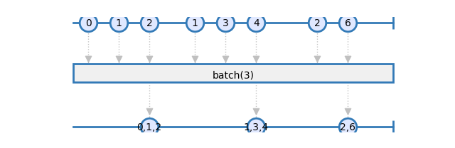
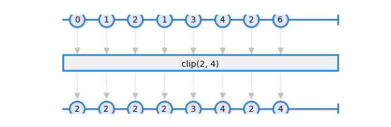
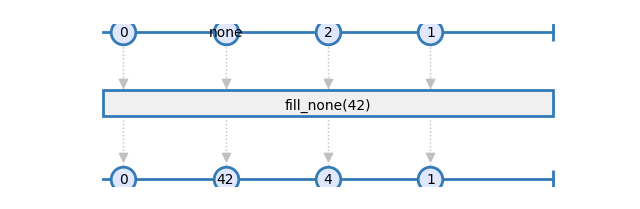
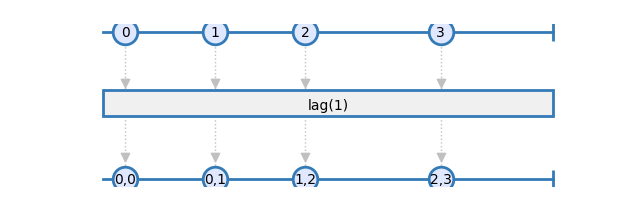
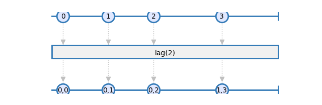
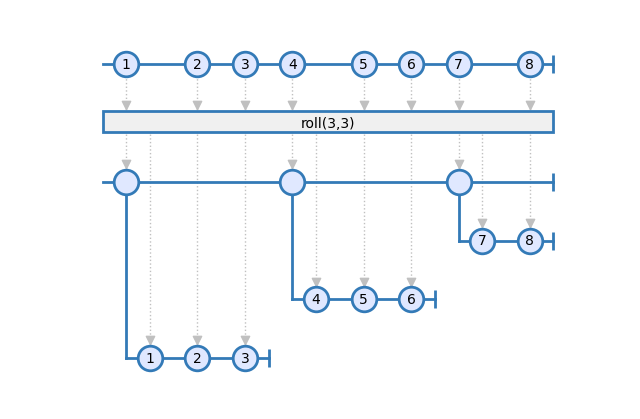
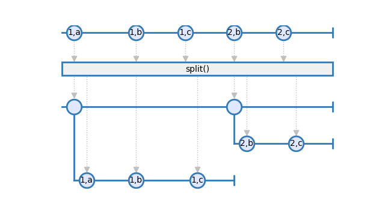
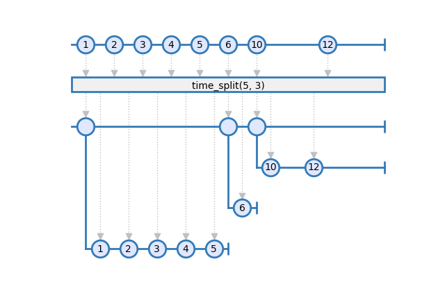
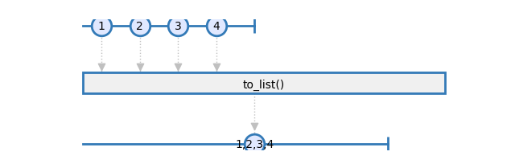

Data
- rxsci.data.batch(batch_size)
Batch source items into lists
On completion, the pending items are emitted as a partial batch.

- Parameters:
batch_size – The size of each batch.
- Returns:
An observable emiting the source items batched in groups of batch_size.
- rxsci.data.cache(field=None)
cache items
Each received items is cached, and the cached item is returned. This operator can save memory on graphs that buffer some items, with many identical values.
The source must be an Observable.
- Parameters:
field – [Optional] cache the provided field is set. Otherwise the whole item is cached. When field is set, this field value must be accessible via the getattr function.
- Returns:
An Observable returning the same items than the source observable, but with cached values.
- rxsci.data.clip(lower_bound=None, higher_bound=None)
clip values between lower_bound (included) and higher_bound (included)
The source can be an Observable or a MuxObservable.

- Parameters:
lower_bound – [Optional] The minimal value to emit.
higher_bound – [Optional] The maximal value to emit.
- Returns:
An observable emiting the source items, clipped to the provided bounds.
- Raises:
ValueError if no bound is provided or lower_bound is bigger than – higher_bound
- rxsci.data.decode(encoding='utf8', incremental=True)
Decode bytes to strings
- Parameters:
encoding – [Optional] The encoding to use.
incremental – [Optional] When True, decode all items incrementaly, otherwise decode them as independent data.
- Returns:
An Observable of strings.
- rxsci.data.encode(encoding='utf8', incremental=True)
Encode strings to bytes
- Parameters:
encoding – [Optional] The encoding to use.
incremental – [Optional] When True, encode all items incrementaly, otherwise encode them as independent data.
- Returns:
An Observable of bytes.
- rxsci.data.fill_none(value)
Replaces None values with value
The source can be an Observable or a MuxObservable.

- Parameters:
value – The value used to replace None values.
- Returns:
An observable where None items are replaced with value.
- rxsci.data.lag(size=1, data_type='obj')
Buffers a lag of size on source items
The source must be a MuxObservable.


- Parameters:
size – [Optional] size of the lag.
data_type – [Optional] the type of the lag data.
- Returns:
An observable where each item is a tuple of (lag, current) items. On the first iterations, the item (first, current) is emitted.
- rxsci.data.roll(window, stride, pipeline)
Projects each element of an observable sequence into zero or more windows which are produced based on element window information.
The source must be a MuxObservable.

Examples
>>> rs.data.roll(3), >>> rs.data.roll(window=3, step=2),
- Parameters:
window – Length of each window.
stride – Number of elements to step between creation of consecutive windows.
pipeline – The Rx pipe to execute on each window.
- Returns:
An observable sequence of windows.
- Raises:
ValueError if window or stride is negative –
- rxsci.data.sort(key=<function <lambda>>, reverse=False)
sort items according to key
Items are sorted in ascending order by default. When reverse is set to True, they are sorted by descending order.
Impementation note: This operator caches all the items of the source observable before sorting them. Si, it can be used only on a batch source, and can lead to high memory usage.
The source must be an Observable.
- Parameters:
key – [Optional] function used to extract the sorting key on each item.
reverse – [Optional] Set to True for descendig sorting.
- Returns:
An observable emitting the sorted items of the source observable.
- rxsci.data.split(predicate, pipeline)
Split an observable based on a predicate criteria.
The source must be a MuxObservable.

- Parameters:
predicate – A function called for each item, that returns the split criteria.
pipeline – The Rx pipe to execute on each split.
- Returns:
A higher order observable returning on observable for each split criteria.
- rxsci.data.time_split(time_mapper, active_timeout=None, inactive_timeout=None, closing_mapper=None, include_closing_item=True, pipeline=None)
Splits an observable based on timing criterias.
Timestamps used to create and expire windows are retrived from the time_mapper function.
The first item of a window is used as a reference to close the window after a duration of active_timeout. Each timestamp of the source items is used to expire the window after a duration of inactive_timeout without receiving any event.
Additional custom loggic can be implemented with the closing_mapper: In addition to the active and inactive timeouts, this mapper can force the closing of the current window, and create a new one.
The source must be a MuxObservable.

- Parameters:
time_mapper (
Callable[[Any],datetime]) – A function that maps the source items to a datetime object.active_timeout (
Optional[timedelta]) – The window expiration duration from the reception date of the first item.inactive_timeout (
Optional[timedelta]) – The window expiration duration when no event is received.closing_mapper (
Optional[Callable[[Any],bool]]) – A function call for each source item and returns whether the window must be closed.include_closing_item (
bool) – whether to include closing items from closing_mapper in the current window (True) or the next window (False).pipeline – The Rx pipe to execute on each split.
- Returns:
A higher order observable returning on observable for each split window.
- rxsci.data.to_array(typecode)
flattens list items to an array and publishes them when the source observable completes.
The source can be an Observable or a MuxObservable.
- Parameters:
typecode – The type of data to use in the array
- rxsci.data.to_deque(extend=False)
flattens list items to a deque fifo and publish them when the source observable completes.
This buffers and emits the items of the source observable as is. Items on the deque are pop as they are emitted. This is useful when working on batch data since it allows to dereference items as they are processed.
The source must be an Observable.
- Parameters:
extend – [Optional] When set to true, the deque is extended for each item received. The default behavior is to append items to the deque.
- rxsci.data.to_list()
flattens list items to a list and publish them when the source observable completes.
The source can be an Observable or a MuxObservable.

- Returns:
An observable emitting a single list item then the source observable completes.